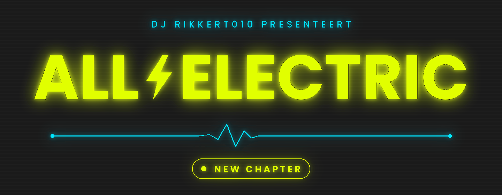
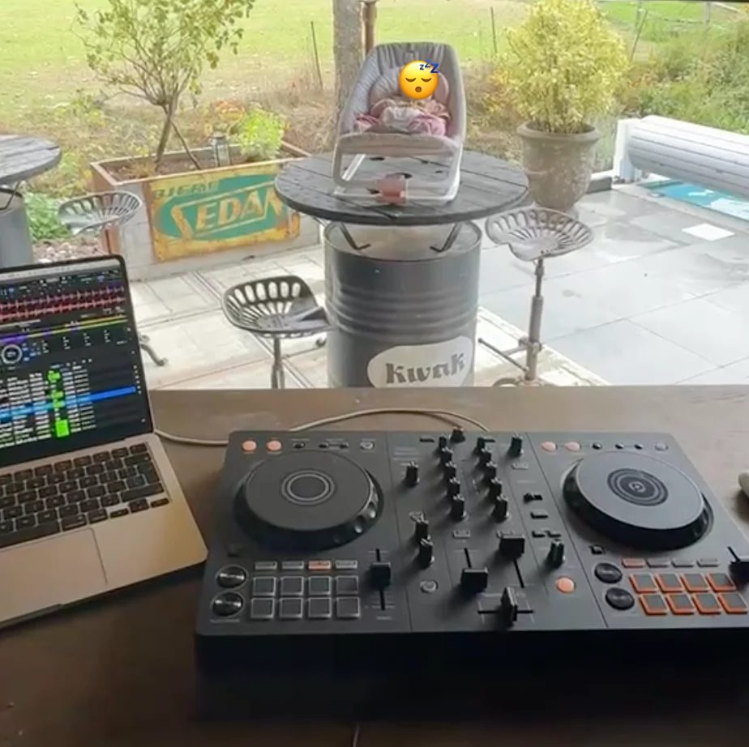
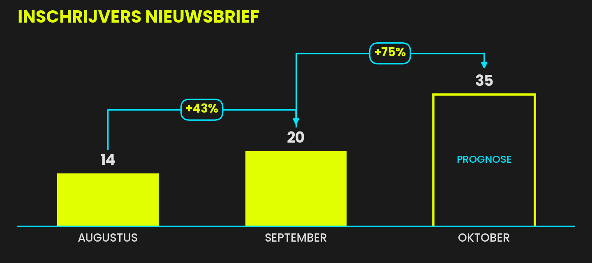
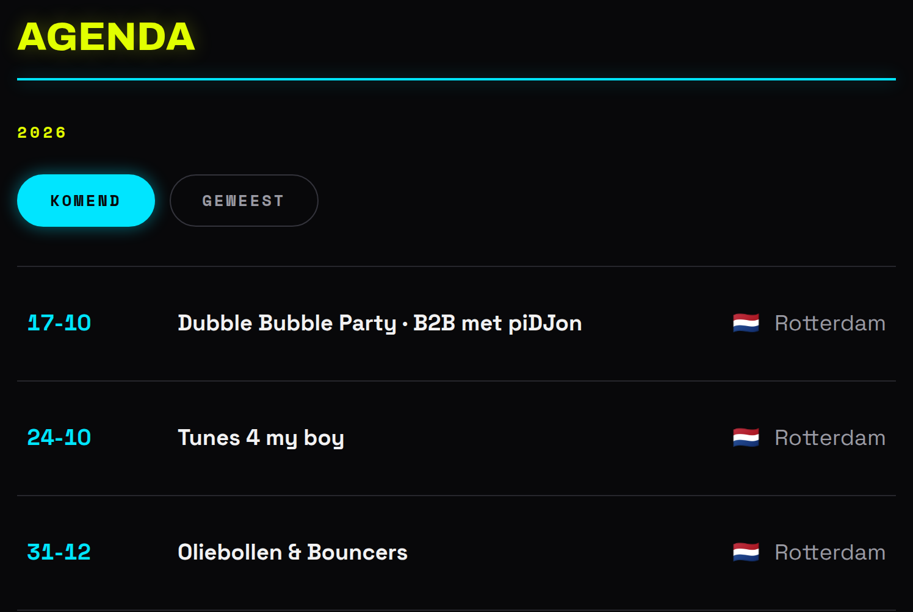

House is een gevoel · New chapter
Exponentiële groei is ingezet.
Geachte 20 (!) fans,
DJ Europarking verruilt old-school rave en lanceert zijn nieuwe alias Ghostline. Nieuw begin, nieuw hoofdstuk.
DJ Rikkert010 laat zich natuurlijk niet aftroeven. Dus ook ik pivot, en wel richting:

Laten we samen de bladzijde omslaan en wegwezen met netcongestie.
Veel leesplezier,
all-electric a.k.a. DJ Rikkert010
01Plaatjes
What a great audience
De kwaliteit en kwantiteit van de crowd loopt zeer uiteen, maar sommig publiek vergeet je niet snel.

De banger van deze editie
Frequency · Systematic Input
Mening. Je kent misschien het fenomeen synesthesie: een prikkel waargenomen door het ene zintuig roept iets op in het andere. Geluid zien als kleur, of voelen op je huid. Bij deze plaat zie ik ampères, voel ik voltages en verdampt weerstand. Dus: ⭐⭐⭐⭐⭐
Stukje informatie. De plaat verscheen in 1992 op 12 inch vinyl met op de A-kant “Slam To The Funk” en op de B-kant “Systematic Input”. Het origineel op YouTube schuurt aan alle kanten. In actie? Check de set van Moody Mehran bij HOR (26-07-2022) vanaf 28m30.
Frequency · Systematic Input
Live from Brussels
Veldonderzoek bij Fabriek Electronique @ Café Flora.
02Staatjes
Prognose · exponentiële groei is ingezet
Het is moeilijk te geloven, maar met 43% extra inschrijvingen is de exponentiële groei (figuur 1) duidelijk ingezet. Nu denk je vast "Oké, mooie groei maar ik ben niet blown away." en dat mag. Graag wijs ik op het onvermogen van de homo sapiens om exponentiële groei te bevatten. Laat je niet overvallen, net zoals tijdens de 4e COVID-19-golf (beter bekend als: disco-piek).

03Zijstraatjes
House is een gevoel
Wie mij kent weet dat ik een enorme podcast-binger ben. Ik luister van alles, maar op eenzame hoogte staat de aflevering 'House is een gevoel' van de Podcast Achterwerk.
Voor wie niet uit het jaar kruik komt: Achterwerk was de brievenrubriek van de VPRO-gids. Sander van de Pavert (later maker LuckyTV) schreef als tiener brieven naar de rubriek.
Wat volgt in het jaar 1994 is een ware battle tussen gabbers en housers. Conclusie van Sander: House is meer dan trainingspakken, kale koppen en beats van 220 BPM. House is een gevoel.
Podcast Achterwerk · House is een gevoel
04Napraatje
Het wordt dringen dit najaar

Ik trap het stookseizoen af weer B2B met piDJon tijdens de Dubble Bubble Party in Kralingen na het doorslaande succes in Café Soif deze zomer.
Een week later volgt Tunes 4 my boy waarna we onder het genot van een oliebolletje '27 inrollen.
Zoals je ziet is er nog ruimte. Dus heb ik al mijn moed bij elkaar geraapt en de barman met wie ik, hopelijk niet eenzijdig, een enorme klik ervaar gepolst of all-electric niet wat plaatjes kan komen draaien. 06 achtergelaten en sindsdien zit ik vol verwachting op de bank.
Ken jij een plek in Rotterdam e.o. waar all-electric moet draaien? Let me know!
Delen = helen
Zo. Dat was vast weer een taaie sessie.
Ken jij meer mensen die je deze ervaring gunt? Stuur 'm door!
Tot sinas en de groente,
all-electric a.k.a. DJ Rikkert010
P.s. Check de nieuwe release van Zharath 'Superstar' waarmee het album 00'verdose compleet is.
P.p.s. I know dat deze septembernieuwsbrief met verzending in oktober ook late 2 the party is.
Ontvang de nieuwsbrief Lees de brieven
Nog niet ingeschreven? Dat kan op de nieuwsbriefpagina. Zie de privacyverklaring.